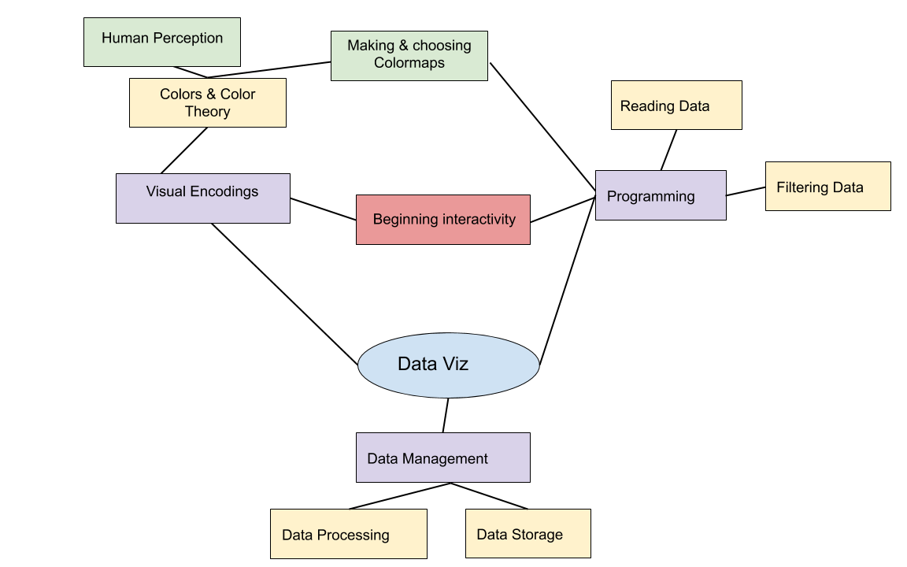
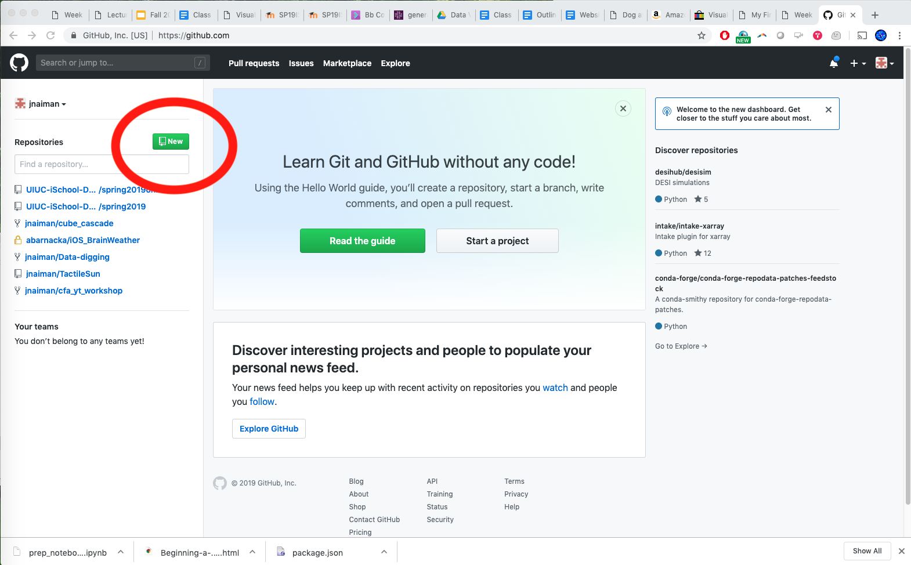
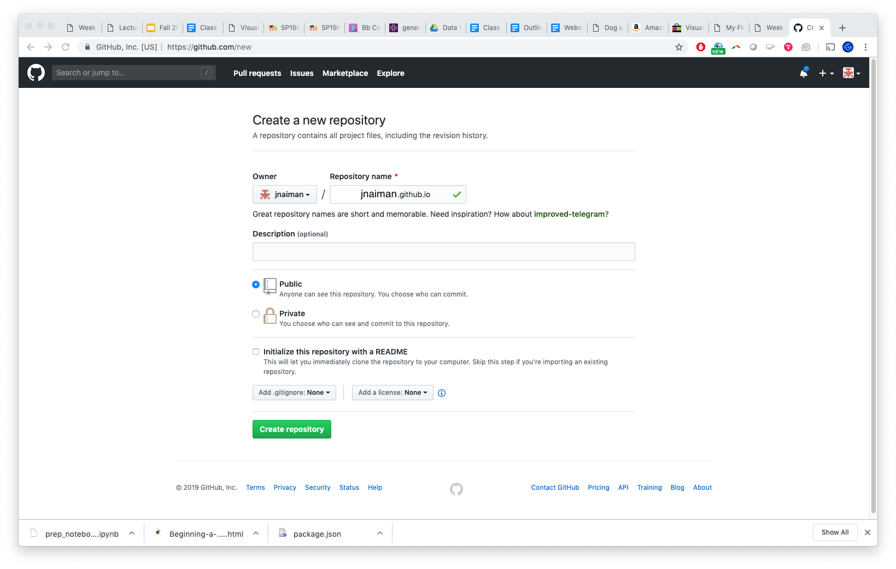
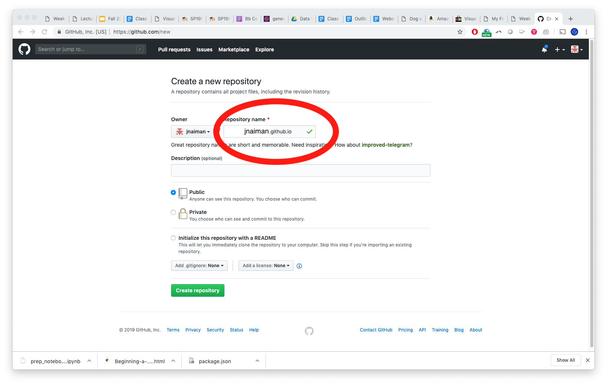
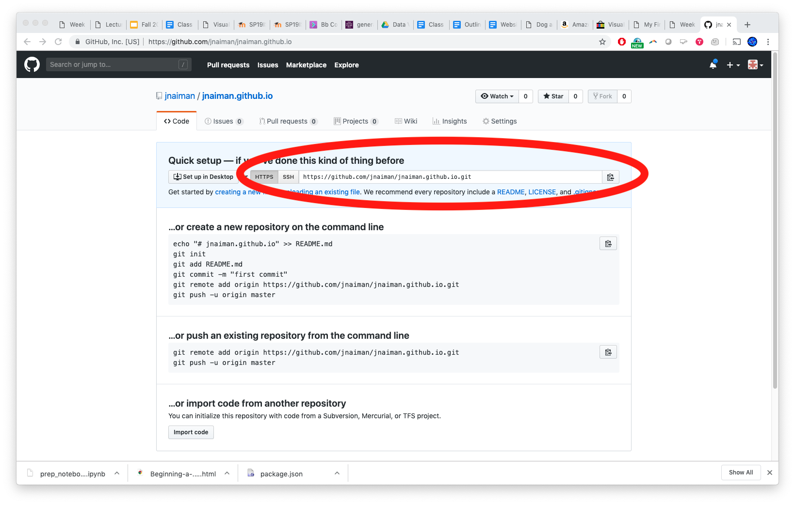

<!doctype html>
<html>
  <head>
<meta charset="utf-8">
<meta name="viewport" content="width=device-width, initial-scale=1.0, maximum-scale=1.0, user-scalable=no">

<title>Lecture 5</title>

<link rel="stylesheet" href="https://cdnjs.cloudflare.com/ajax/libs/reveal.js/3.8.0/css/reveal.css">
<link rel="stylesheet" href="https://cdnjs.cloudflare.com/ajax/libs/reveal.js/3.8.0/css/theme/white.min.css">
<link rel="stylesheet" href="https://maxcdn.bootstrapcdn.com/font-awesome/4.5.0/css/font-awesome.min.css">

<!-- Theme used for syntax highlighting of code -->
<link rel="stylesheet" href="https://cdnjs.cloudflare.com/ajax/libs/highlight.js/9.12.0/styles/github.min.css">
<link href="https://fonts.googleapis.com/css?family=Questrial" rel="stylesheet">

<script src="https://cdnjs.cloudflare.com/ajax/libs/reveal.js/3.8.0/lib/js/head.min.js"></script>
<script src="https://cdnjs.cloudflare.com/ajax/libs/reveal.js/3.8.0/js/reveal.min.js"></script>


</style>

  <link rel="stylesheet/less" type="text/css" href="/spring2020/assets/styles.less" />
  </head>

  <body>
    <div class="reveal">
      <div class="slides">
        <section data-markdown
           data-separator="^\n---\n"
           data-separator-vertical="^\n----\n">
          <script type="text/template">
<!-- .slide: class="titleslide" -->

# Data Visualization
<div style="height: 6.0em;"></div>

## Jill P. Naiman
## Spring 2020
## Lecture 5

---

## Warm-Up Activity

1. What is the visualization trying to show?
1. What are its methods?
1. What are the strengths / weaknesses?

 * https://zzzev.com/movies

---

## Weekly Viz Report

And the winner is...

notes:
run the random number generator!

* review: widgets
* motivate bqplot with pretty pictures
* GoG

---

## Today's Main Topics

 * Grammar of Graphics & Imperative vs. Declaritive
 * bqplot
 * getting setup with github.io


notes:
bqplot!

---

## Where we are: Last week



---

## Where we are: This week


---

## Note on HW for the next two weeks

## Note on OH's next few Fridays

notes:
go over HW stuff

---

<br />
<br />
<br />

# TOPIC 1: Imperative vs. Declaritive Viz Programming Languages

---


 * "_Declarative_ programming languages ... are rather like logics in that programs declare statements that are known to be true and relationships between these and other statements."
 * "_Imperative_ programming languages ... state what shall be done in given conditions. They start with an initial state and an explicit set of instructions that describe the process that will unfold."

[Reference](http://cfpm.org/~bruce/logreas/logreas_7.html)

---

## Grammar of Graphics for Declaritive Viz

 * Declaritive viz "paints" graphics on a canvas elements common to all visualizations

<!--[](/spring2020/week05/images/GoG.png)-->


[More info here](https://towardsdatascience.com/a-comprehensive-guide-to-the-grammar-of-graphics-for-effective-visualization-of-multi-dimensional-1f92b4ed4149)

---

## Pandas: Have been using mostly _Imperatively_

 * [pandas.pydata.org](http://pandas.pydata.org/)
 * Support for indexing, multi-indexing
 * Data structures
   * Series
   * DataFrame
   * Panel
 * Groupby, select, aggregation features
 * IO features
   * Reading/writing CSV, HDF5
   * Loading data from remote sources

---

<br />
<br />
<br />

# TOPIC 2: Engines - bqplot

---

## Engines

This week we'll be looking at a new visualization engine.

 * `bqplot` - both imperative & declaritive methods

Next few weeks:
 * `vega-lite` - declaritive
 * `Idyll` - declaritive

---

## bqplot

Our first engine, `bqplot`, is a Jupyter-based interactive plotting system.

It presents two principal interfaces:

1. `pyplot`-like interface, for making the transition from matplotlib easier
```#python
from bqplot import pyplot as bplt
bplt.figure(title='A Figure')
bplt.scatter(x_data, y_data)
bplt.show()
```
1. An object-oriented API for constructing interactive visualizations
```#python
scatter_chart = Scatter(x=x_data, y=y_data, scales={'x': x_sc, 'y': y_sc})
fig = Figure(marks=[scatter_chart], title='A Figure', axes=[x_ax, y_ax])
display(fig)
```

notes:
We will be using the latter far more frequently than the former.

---

## Why bqplot?

 * Has a "matplotlib" style similar to what we've been using thus far
 * Also has an option for the declaritive style of viz software like
 d3.js or tableau
 * Allows us to make NYTimes and 538-style visualizations efficiently, and
 without having to
 learn a lot of javascript

---

## bqplot

Now that we've learned a bit about widgets, we can start to dig into `bqplot`.
`bqplot` is based around traitlets and widget objects; every object you work
with will have traits and may be represented as a widget.

---

## bqplot

Now that we've learned a bit about widgets, we can start to dig into `bqplot`.
`bqplot` is based around traitlets and widget objects; every object you work
with will have traits and may be represented as a widget.

When we use `bqplot` we will be constructing `Figure` objects, which will
contain `marks` and `axes`.  To use these, we will build mark objects (`Bars`,
`Lines`, `Scatter`, `Map`, etc) and describe the relationship between points
using `Scale` objects.

---

## bqplot

Now that we've learned a bit about widgets, we can start to dig into `bqplot`.
`bqplot` is based around traitlets and widget objects; every object you work
with will have traits and may be represented as a widget.

When we use `bqplot` we will be constructing `Figure` objects, which will
contain `marks` and `axes`.  To use these, we will build mark objects (`Bars`,
`Lines`, `Scatter`, `Map`, etc) and describe the relationship between points
using `Scale` objects.

We will be building out these objects and their relationships to develop
interactivity.

---

## bqplot objects: Using Grammar of Graphics

---

## bqplot objects: Using Grammar of Graphics

 * A mark is some mechanism for displaying data.  For example, we might have
   data that has a set of x and y values, which we can use `Lines` to
   represent.

---

## bqplot objects: Using Grammar of Graphics

 * A mark is some mechanism for displaying data.  For example, we might have
   data that has a set of x and y values, which we can use `Lines` to
   represent.
 * `Scale` objects describe relationships between visual attributes (position)
   and data values.

---

## bqplot objects: Using Grammar of Graphics

 * A mark is some mechanism for displaying data.  For example, we might have
   data that has a set of x and y values, which we can use `Lines` to
   represent.
 * `Scale` objects describe relationships between visual attributes (position)
   and data values.
 * `Axis` objects are where data are placed.

---

## bqplot objects: Using Grammar of Graphics

 * A mark is some mechanism for displaying data.  For example, we might have
   data that has a set of x and y values, which we can use `Lines` to
   represent.
 * `Scale` objects describe relationships between visual attributes (position)
   and data values.
 * `Axis` objects are where data are placed.
 * `Figure` objects contain marks and axes, as well as interaction.

---

## bqplot introduction

Our first example will be a simple lineplot.

```#python
import bqplot
import numpy as np

x = np.arange(100)
y = np.random.random(100) + 5

x_sc = bqplot.LinearScale()
y_sc = bqplot.LinearScale()
lines = bqplot.Lines(x = x, y = y, scales = {'x': x_sc, 'y': y_sc})
ax_x = bqplot.Axis(scale = x_sc, label = 'X value')
ax_y = bqplot.Axis(scale = y_sc, label = 'Y value', orientation = 'vertical')
fig = bqplot.Figure(marks = [lines], axes = [ax_x, ax_y])
display(fig)
```

notes:
walk through each line and say this order is pretty usual

---

### vega-lite (if we have time)

vega-lite is a high-level method for describing visualizations independently of
their data.

We will be exploring this using the online editor at:

https://vega.github.io/editor/

---

<br />
<br />
<br />

# TOPIC 3: Getting setup with github.io

---

## github.io for publishing

Step 1: Create/login to your github account

notes:
(We'll also do this "live" in the coding section of class)

---

## github.io for publishing

Step 2: Create new repository


---

## github.io for publishing

Step 2: Create new repository



---

## github.io for publishing

Step 3: Name your new repository as ```[username].github.io```



---

## github.io for publishing

Step 3: Name your new repository as ```[username].github.io```



notes: the name is important here!!

---

## github.io for publishing

Step 4: Clone your repository


---

## github.io for publishing

Step 4: Clone your repository



notes: make note of your git name, we'll use this for "cloning" our github repo

---

## github.io for publishing

Step 5: Clone your repository
 * In command line do: ```git clone YOUR_REPO_LINK```

Step 6: Add an index.html file to this new folder, for example:

```{html}
<!doctype html>
<html>
  <head>
    <title>This is the title of the webpage!</title>
  </head>
  <body>
    <p>This is an example paragraph. Anything in the <strong>body</strong> tag will appear on the page, just like this <strong>p</strong> tag and its contents.</p>
  </body>
</html>
```

---

## github.io for publishing

Step 7: Add files to your repo officially
 * ```git add -A```
 
Step 8: Commit these files (say what you are doing)
 * ```git commit -m "my first add"```
 
Step 9: Push to your online repo
 * ```git push```
 
Step 10: wait for your website to build and then check it out!
 * Link: ```https://YOUR_GITHUB_USER_NAME.github.io/```

---

## More info:

[https://pages.github.com/](https://pages.github.com/)

---

# To Python for more interactivity!

---


          </script>
        </section>
      </div>
    </div>
<script>
    // More info about config & dependencies:
    // - https://github.com/hakimel/reveal.js#configuration
    // - https://github.com/hakimel/reveal.js#dependencies
    Reveal.initialize({
        dependencies: [
            { src: 'https://cdnjs.cloudflare.com/ajax/libs/reveal.js/3.8.0/plugin/markdown/marked.js' },
            { src: 'https://cdnjs.cloudflare.com/ajax/libs/reveal.js/3.8.0/plugin/markdown/markdown.min.js' },
            { src: 'https://cdnjs.cloudflare.com/ajax/libs/reveal.js/3.8.0/plugin/notes/notes.min.js', async: true },
            { src: 'https://cdnjs.cloudflare.com/ajax/libs/reveal.js/3.8.0/plugin/highlight/highlight.min.js', async: true, callback: function() { hljs.initHighlightingOnLoad(); } },
            { src: 'https://cdnjs.cloudflare.com/ajax/libs/reveal.js/3.8.0/plugin/math/math.min.js', async: true },
            { src: 'https://cdn.jsdelivr.net/npm/reveald3/reveald3.js'},
            { src: '/reveal.js-plugins/chalkboard/chalkboard.js' },
            { src: '/reveal-paperjs/paper-figures.js', async: true},
        ],
		keyboard: {
			67: function() { RevealChalkboard.toggleNotesCanvas() },	// toggle notes canvas when 'c' is pressed
			66: function() { RevealChalkboard.toggleChalkboard() },	// toggle chalkboard when 'b' is pressed
			46: function() { RevealChalkboard.clear() },	// clear chalkboard when 'DEL' is pressed
			 8: function() { RevealChalkboard.reset() },	// reset chalkboard data on current slide when 'BACKSPACE' is pressed
			68: function() { RevealChalkboard.download() },	// downlad recorded chalkboard drawing when 'd' is pressed
		},
        center: false,
        transition: 'none',
        backgroundTransition: 'none',
	slideNumber: true

    });
</script>
<script src="//cdnjs.cloudflare.com/ajax/libs/less.js/3.9.0/less.min.js" ></script>


  </body>
</html>

